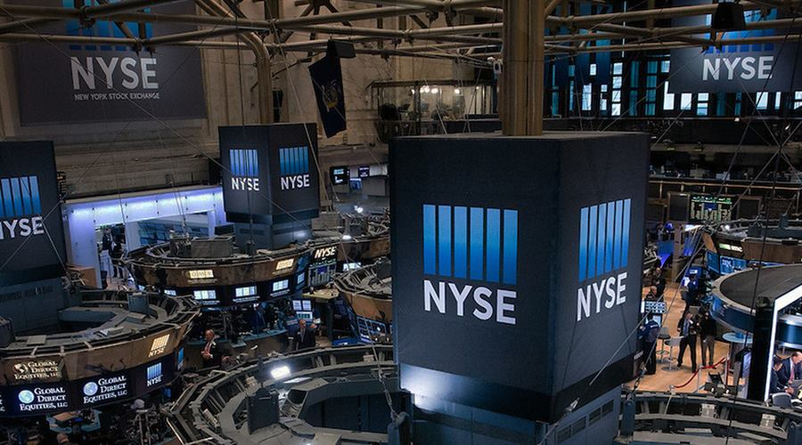

09 Finance Magnates 보도일 2026.09.23
NYSE, 토큰화 주식 유통 채널로 Blockchain.com 검토

NYSE가 준비 중인 토큰화 증권 시장에 새 유통 채널로 Blockchain.com이 거론됐다. 이번에는 암호자산 플랫폼 Blockchain.com이다. 역할 분담은 비교적 분명하다. NYSE는 시장과 매칭 엔진을 맡고, Blockchain.com은 해외 고객 접점을 맡는 구조다.
무슨 일이 있었나
NYSE Group은 Blockchain.com과 토큰화 미국 상장 주식·ETF 유통을 검토하는 양해각서(MOU)를 맺었다. 구조가 확정되면 Blockchain.com은 NYSE가 준비 중인 디지털 대체거래시스템으로 국제 고객을 연결하는 채널이 된다.
NYSE는 거래 시장과 매칭 인프라를 운영한다. Blockchain.com은 자사 국제 고객 기반을 유입 채널로 제공한다. Ledger Insights 보도에는 Blockchain.com의 계정 수가 4400만 개로 적혔다.
이번 합의는 예비 단계다. 규제 승인이 필요하다. 양사는 연결 시점도 공개하지 않았다. Blockchain.com은 4400만 계정 가운데 실제 자격과 지역 요건을 충족하는 이용자가 얼마나 되는지도 밝히지 않았다.
시장 데이터 연계도 합의 범위에 포함됐다. Blockchain.com은 자사 앱에 일부 ICE·NYSE 데이터 피드를 넣을 예정이다. 이 데이터 연계는 거래 접근보다 먼저 도입될 수도 있지만, 일정은 제시되지 않았다.
왜 지금 나왔나
NYSE는 1월에 이 시장 구상을 처음 공개했다. 당시 24시간 거래, 소수점 주문, 스테이블코인 기반 자금 납입, 온체인 결제를 제시했다.
이후 NYSE와 모회사 ICE는 구조별 파트너를 순차적으로 붙였다. Blockchain.com은 그 연장선에 있는 유통 채널 파트너다. 앞서 3월에는 OKX, 8월에는 tZERO와도 관련 계약이 있었다.
시장 구조에서 바뀌는 것
이번 구조에서 NYSE는 거래와 매칭을 맡고, 다른 회사들이 발행·이전관리·수탁·배포를 나눠 맡는다. Securitize는 디지털 발행과 이전대리인 기능을 지원할 예정으로 소개됐다. tZERO는 소유 기록, 이전 처리, 브로커딜러와 사후거래 인프라를 맡는 방향으로 작업 중이다.
Blockchain.com은 거래 시스템이 아니라 배포 계층을 더한다. NYSE는 토큰화 주식이 기존 발행 주식과 대체 가능하도록 설계한다고 밝혔다. 토큰 형태로 직접 발행한 증권도 함께 지원할 계획이다. 이 구조에서는 주주 배당과 의결권도 유지된다고 설명했다.
다만 핵심 운영 조건은 아직 비어 있다. 어떤 법인이 서비스를 제공하는지, 증권 계좌를 어떻게 여는지, 어떤 지역이 포함되는지 공개되지 않았다. 수탁 방식, 이용 자격, 지역 제한도 아직 드러나지 않았다.
국내와의 접점
원문은 국내 적용에 대해 언급하지 않았다.
우리 업무로 옮기면
토큰화 증권 인프라는 한 회사가 다 하는 모델보다 분업형으로 굳어질 가능성이 크다. 거래소, 발행·이전관리, 수탁, 앱 채널, 시세 공급이 각각 다른 사업자일 수 있다.
우리 쪽에서 볼 체크포인트는 다음과 같다.
- 고객 채널과 거래 인프라를 분리한 계정 구조를 지원할 수 있는지
- 토큰 잔고와 전통 증권 계좌를 어떤 기준으로 연결할지
- 실시간 시세 피드 연계와 주문 자격 심사를 같은 화면 흐름에 넣을 수 있는지
- 지역 제한과 투자자 자격 규칙을 어느 계층에서 집행할지
원문은 상장 종목, 출시 시점, 상업 조건을 밝히지 않았다. 사업 검토 단계에서는 기능 범위보다 권리 구조와 책임 분담표를 먼저 받아 보는 편이 낫다.
주요 용어
원문 정보
제목: NYSE Adds Blockchain.com as Distribution Channel for Tokenised Stock Venue
보도일: 2026.09.23